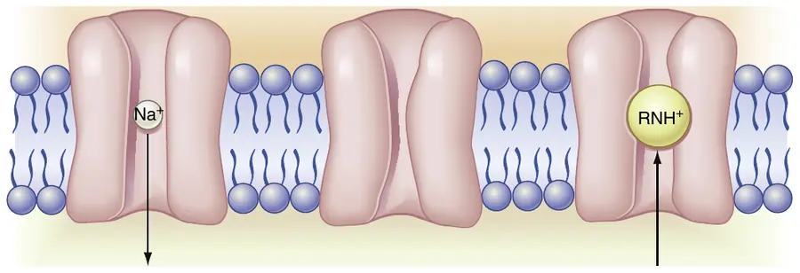

نسخه استخراجشده؛ ترجمه یا تأیید علمی انجام نشده است. وضعیت: captured
خانم ۳۵ سالهای پس از بلاک عصب آلوئولار تحتانی (IANB)، تزریقی که دندانهای فک پایین یک سمت را بیحس میکند، نیمی از لب و زبانش را حس نمیکند و نگران میپرسد: «عصبم را از کار انداختی؟ برمیگردد؟» پاسخ کوتاه و علمی تو چیست؟
بیحسی موضعی عصب را نمیکشد. فقط برای مدتی جلوی ورود سدیم به درون عصب را میگیرد و وقتی دارو از عصب برود، هدایت کامل برمیگردد.
اثر اصلی دارو در مرحلهی دپلاریزاسیون است. پتانسیل استراحت تغییر نمیکند و غشا هایپرپلاریزه نمیشود؛ غشا قطبی میماند و برای همین به آن «بلاک غیردپلاریزان» (nondepolarizing) میگویند. سرعت رپلاریزاسیون عوض نمیشود و اثر دارو بر هدایت پتاسیم ناچیز است.
در حالت عادی، نفوذپذیری اوج سدیم پنج تا شش برابر حداقلِ لازم برای هدایت است؛ این همان حاشیهی اطمینان هدایت است. بیحسی این حاشیه را پایین میآورد و وقتی به زیر یک برسد، هدایت قطع میشود.
بیحسیهای تزریقی (لیدوکائین، مپیواکائین، آرتیکائین، پریلوکائین، بوپیواکائین) دو شکل دارند: بیبار (RN) و باردار (RNH+). حدود ۹۰٪ اثر بلاک کار شکل باردار است و حدود ۱۰٪ کار شکل بیبار.

میلین عایق است و در فیبر میلیندار، دارو فقط در گرههای رانویه به غشا میرسد؛ همانجا که کانالهای سدیم متراکماند. ایمپالس میتواند از روی یک یا دو گرهی بلاکشده بپرد، پس دستکم دو تا سه گرهی پشتسرهم باید بلاک شوند: طولی حدود ۸ تا ۱۰ میلیمتر از عصب.
نکتهی طلایی: محلول را نزدیک عصب و با حجم کافی بگذار تا چند میلیمتر از تنهی عصب را بپوشاند. مقدار خیلی کم در یک نقطه، حتی درست کنار عصب، ممکن است ایمپالس را متوقف نکند.